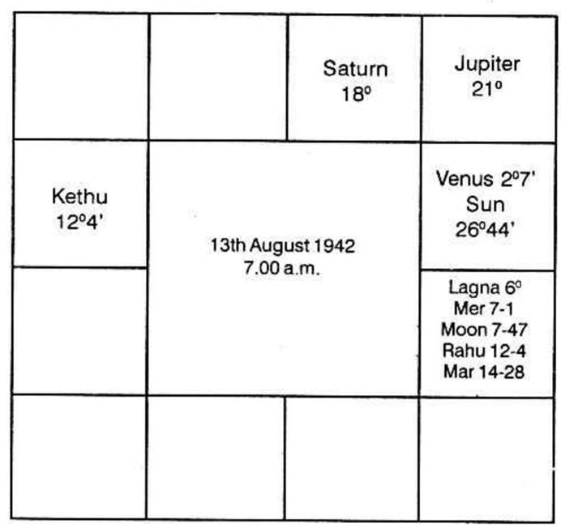
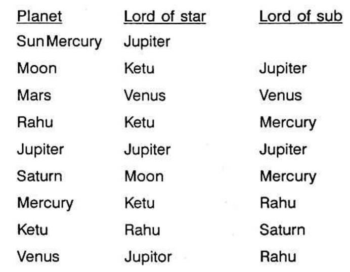
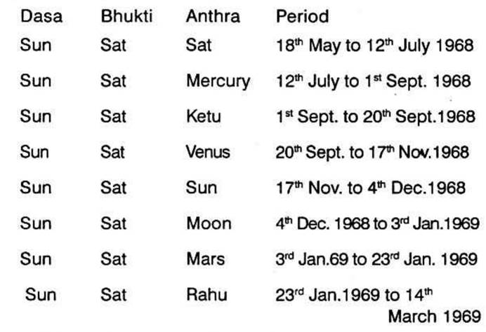
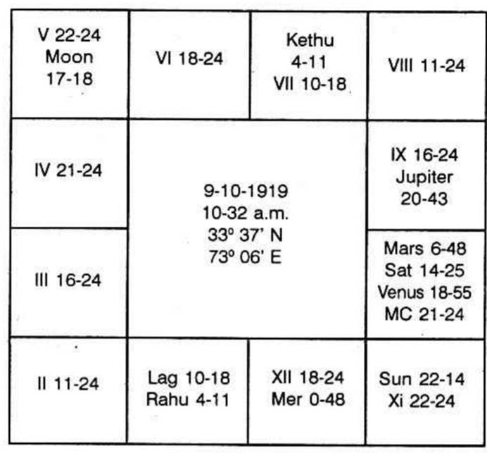

A lady puts a question about transfer and promotion of her husband. She furnishes her horoscope which is given below:

I cusp 6° Leo
II cusp 4°26′ Virgo
III cusp 5°26′ Libra
IV cusp 6°6′ Scorpio
V cusp 7°26′ Sagittarius
VI cusp 7°6′ Capricorn
Other 6 cusps are diametrically opposite.
Depositor
I bhava : Moon, Mercury, Mars, Rahu
VII bhava : Ketu
X bhava : Saturn
XI bhava : Jupiter and Venus
XII bhava : Sun

Sun Dasa and Saturn Bhukti started on 18th May, 1968.
For transfer we have to consider houses 3, 9 and 12th. Therefore for husband’s transfer, consider houses 3, 9 and 12 from 7th house, i.e. 9th, 3rd and 6th.
9th house: It is vacant. Lord of 9th is Mars. No planet in any of the three stars of Mars. So take Mars. But Rahu is conjoined with Mars. So take Rahu and Ketu in the constellation Sathabisha of Rahu. Therefore Rahu and Ketu are significators.
3rd house: It is vacant. Lord of 3rd is Venus. Mars is in Venus star. We have already discussed Mars.
6th house: It is vacant. Lord of 6th is Saturn. No planet in any of the three stars of Saturn. Take Saturn. Saturn’s sign is occupied by Ketu who is aspected by Saturn and in the sub of Saturn. Therefore take Ketu and Rahu, Moon and Mercury are in Magha ruled by Ketu.
Planet showing transfer are Rahu, Ketu, Saturn, Moon and Mercury. As Moon and Mercury are conjoined with Rahu, reject them and take Rahu. Therefore, Rahu, Saturn and Ketu are very strong significators.
Sun Dasa (Sun is with Venus in the same sign) and Saturn Bhukti is on. Select Rahu Anthra and Ketu Shookshma. Ketu Anthra cannot be taken as Ketu is in Saturn’s sign and aspected by Saturn, a planet of delay.

Rahu Anthra operates from 23rd January 1969 to 14th March 1969. Ketu Shookshma rules between 23rd Feb. 1969 to 27th February, 1969. Look at Sun’s transit. Sun enters Saturn’s sign Rahu star. Select Ketu sub, i.e. on 27 February, 1969. Sun will be in Saturn’s sign, Rahu star, Ketu sub. Moon will be in Mercury’s sign Rahu star. Mars in Mar’s sign, Saturn star. Saturn will travel in Mercury star, Saturn sub. Rahu will transit in Saturn star. So he will be transferred on 27th February 1969. As Rahu operating as Anthra lord, is conjoined with Mars, lord of 9th house which happens to be 3rd from 7th (husband’s) he will be transferred to a place not far off. A short travel is shown.
For promotion take houses 2, 6, 10 and 11 from 7th house i.e., 8th, 12th, 4th and 5th from lagna of the lady.
8th house: It is vacant, Lord of 8th is Jupiter. Jupiter and Venus are in Punarvasu ruled by Jupiter. Jupiter is in its own sub and so gains strength. Take Jupiter and Venus.
12th house: Occupied by Sun. No planet in Sun’s star. Sun in Jupiter’s sub. So take Sun: Sun’s sign is occupied by Rahu: Take Rahu and Ketu in Rahu star: Rahu and Ketu, Sun are significators;
4th house: Owned by Mars. We have already discussed Mars;
5th house: Owned by Jupiter; We have discussed Jupiter.
So significators are Jupiter, Venus, Rahu, Ketu, Sun.
Sun Dasa Saturn Bhukti is going on. Saturn Bhukti lord is in constellation Rohini ruled by Moon owner of 12th house. So Saturn Bhukti will give promotion. We would have selected Jupiter’s Anthra as Jupiter in its own constellation and sub and aspecting 5th bhava. But Rahu a node is transiting in Pisces a sign ruled by Jupiter and hence whatever Jupiter has to give Rahu will give in his period. Therefore the period of transfer and promotion coincides and he will be promoted at the same time. As Rahu is in lagna, i.e. 7th house from 7th his immediate boss will be helping him in transfer
Horoscope is given in the next Page.
Budha Dasa Balance 16 years 2 months 9 days.
Moon Dasa started on 18-12-68.
For transfer judge houses 3, 9 and 12 which includes change of residence also. They should be connected with house 6 or 10. If connected with 11th house, it shows increase in income and improvement in status.

Third house is vacant. It is owned by Saturn; Pushya, Anuradha and Uthrapadra are governed by Saturn—Rahu is in Anuradha.
Ninth house is occupied by Jupiter, Mars, Saturn and Venus. No planet is in Jupiter star. Mercury is in Mars star.
Rahu is in Saturn star; Saturn and Venus are in Venus star.
Rahu is in 12. No planet is in Rahu star. Rahu is the strongest.
When majority of planets denote a particular matter, how to eliminate many and select those which will act. A matter may be indicated by any number of planets. That particular affair may be one which repeats now and then in one’s life, just like birth of child, purchase of jewel, transfer, change of residence, journeys, etc. Then the significators at the moment of judgement clearly shows the immediate next repetition of the matter. In one’s life birth and death alone happen only once. Other affairs repeat themselves according to one’s horoscope.
Today it is Tuesday, ruled by Mars. Lagna is in Cancer, owned by Moon, Star is Poorvapadra governed by Jupiter in whose sign, at the time of judgment, Rahu is deposited who represents Jupiter. Rasi is owned by Saturn. Hence Moon, Mars, Rahu, Jupiter and Saturn are the significators. Lord of lagna is the strongest and his dasa is on. Lord of star represented by Rahu. So take Rahu Bhukti. Next select Jupiter, lord of the star, i.e., Jupiter Anthra, Saturn Shookshma is the last sub sub period (that it will be around 17th August, 1970.)